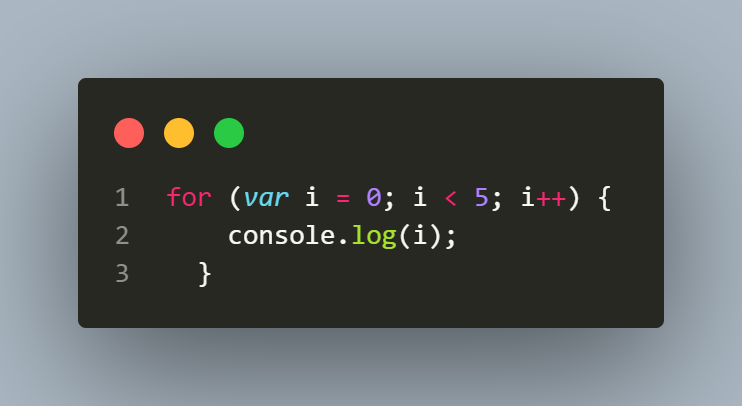
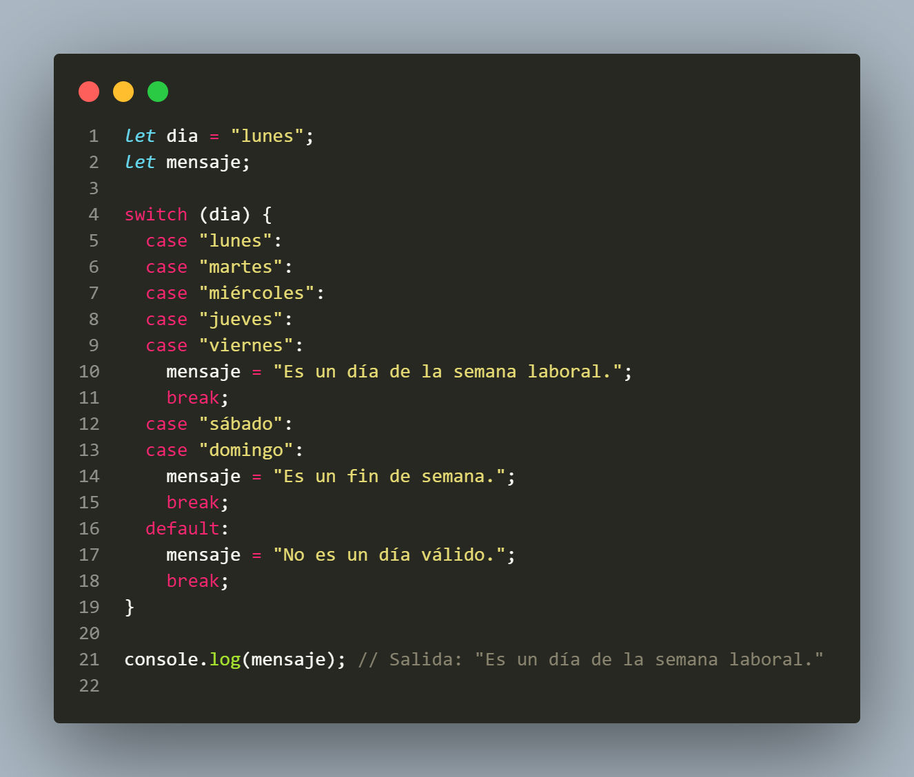
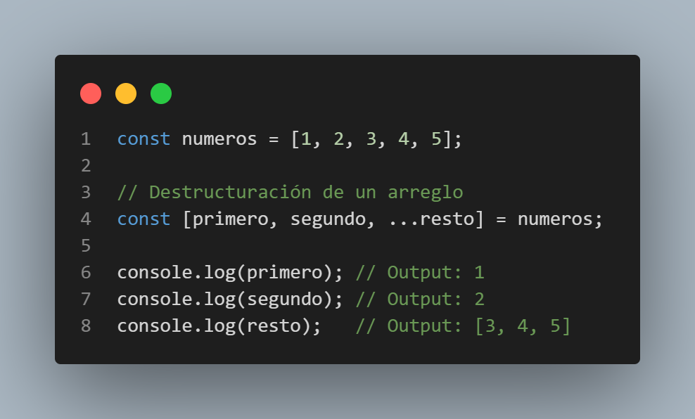

Estructuras de control
Las estructuras de control en JavaScript se utilizan para controlar el flujo de ejecución de un programa. Estas estructuras permiten a los programadores tomar decisiones y ejecutar diferentes bloques de código en función de una condición. A continuación, se presentan algunas de las estructuras de control más comunes en JavaScript:
Tipos de Operadores
En JavaScript existen diferentes tipos de operadores, que se utilizan para realizar diferentes tipos de operaciones. A continuación, se presentan algunos de los operadores más comunes en JavaScript:
- Operadores aritméticos: se utilizan para realizar operaciones matemáticas. Los operadores aritméticos incluyen la suma (+), la resta (-), la multiplicación (*), la división (/), el módulo (%) y el operador de incremento (++) y decremento (--).
- Operadores de asignación: se utilizan para asignar valores a variables. Los operadores de asignación incluyen el operador de asignación simple (=), el operador de asignación y suma (+=), el operador de asignación y resta (-=), el operador de asignación y multiplicación (*=), el operador de asignación y división (/=) y el operador de asignación y módulo (%=).
- Operadores de comparación: se utilizan para comparar valores. Los operadores de comparación incluyen el operador de igualdad (==), el operador de desigualdad (!=), el operador de igualdad estricta (===), el operador de desigualdad estricta (!==), el operador mayor que (>), el operador menor que (<), el operador mayor o igual que (>=) y el operador menor o igual que (<=).
- Operadores lógicos: se utilizan para realizar operaciones lógicas. Los operadores lógicos incluyen el operador lógico and (&&), el operador lógico or (||) y el operador lógico de negación (!).
- Operador ternario: se utiliza para realizar una evaluación condicional en una sola línea. El operador ternario tiene la siguiente sintaxis: condicion ? valorSiCierto : valorSiFalso.
- Operadores de tipo: se utilizan para comprobar el tipo de un valor. Los operadores de tipo incluyen el operador typeof y el operador instanceof.


Estos son algunos de los operadores más comunes en JavaScript. Con ellos, los programadores pueden realizar diferentes tipos de operaciones y tomar decisiones en función de los valores de las variables.
Condicionales
En JavaScript, los condicionales son estructuras de control que permiten ejecutar cierto bloque de código dependiendo de una condición evaluada como verdadera o falsa. Los condicionales más comunes en JavaScript son if, else if y else. Aquí tienes algunos ejemplos de cómo se utilizan:
1. if: El condicional "if" permite ejecutar un bloque de código si una condición especificada es verdadera. Es una estructura de control fundamental que permite tomar decisiones en función de una evaluación booleana. Si la condición se cumple, el bloque de código dentro del "if" se ejecuta; de lo contrario, se omite.
2. if...else: El condicional "if...else" expande el uso del condicional "if" al permitir ejecutar un bloque de código cuando la condición especificada es verdadera y otro bloque de código cuando la condición es falsa. Si la condición en el "if" se cumple, se ejecuta el bloque de código dentro del "if"; de lo contrario, se ejecuta el bloque de código dentro del "else".
3. if...else if...else: El condicional "if...else if...else" es una extensión del condicional "if...else" que permite evaluar múltiples condiciones secuencialmente. Se comprueban las condiciones en orden y se ejecuta el bloque de código correspondiente al primer "else if" cuya condición sea verdadera. Si ninguna de las condiciones es verdadera, se ejecuta el bloque de código dentro del "else".
Estas estructuras de control condicionales te permiten controlar el flujo de ejecución de tu programa según las condiciones que especifiques, lo que te brinda la capacidad de tomar decisiones dinámicas y realizar diferentes acciones en función de diferentes situaciones.
Ciclos (Loops)
En JavaScript, hay varias estructuras de control de bucles que permiten repetir bloques de código de manera iterativa. Los ciclos más comunes son `for`, `while` y `do...while`. A continuación, te proporcionaré ejemplos de cada uno de ellos:
1. for: El bucle "for" se utiliza para repetir un bloque de código un número específico de veces. Se compone de tres partes: la inicialización, la condición y el incremento/decremento.
2. while: El bucle "while" se utiliza para repetir un bloque de código mientras se cumpla una condición especificada.

3. do...while: El bucle "do...while" es similar al bucle "while", pero la diferencia es que el bloque de código se ejecuta al menos una vez antes de verificar la condición.
switch
El statement switch en JavaScript se utiliza para tomar decisiones basadas en múltiples casos posibles. Proporciona una forma más legible y estructurada de escribir declaraciones condicionales cuando se tienen muchas opciones diferentes.
Aquí tienes un ejemplo básico de cómo se utiliza el switch en JavaScript:
En este ejemplo, valor es la expresión que se evalúa y se compara con cada caso. Si valor coincide con uno de los casos, se ejecutará el bloque de código correspondiente a ese caso. La instrucción break se utiliza para salir del switch después de que se haya ejecutado el código correspondiente al caso. Si no se coloca el break, se ejecutarán también los casos siguientes.
El caso default se utiliza cuando no se encuentra ninguna coincidencia entre valor y los casos anteriores. Puedes omitir el caso default si no es necesario en tu lógica.
Aquí hay otro ejemplo para ilustrar cómo se puede usar el switch:
En este ejemplo, se compara el valor de dia con diferentes casos y se asigna un mensaje correspondiente a la variable mensaje.
Recuerda que los casos en el switch pueden ser números, cadenas de texto u otros valores. También es posible utilizar expresiones más complejas como condiciones en los casos.
Espero que esta información te sea útil para entender cómo funciona el statement switch en JavaScript. Si tienes más preguntas, no dudes en preguntar.
Manejo de Errores
En JavaScript, puedes manejar errores utilizando las declaraciones try y catch. El bloque try se utiliza para envolver el código que podría generar una excepción, y el bloque catch se utiliza para capturar y manejar esa excepción. Aquí tienes algunos ejemplos de manejo de errores en JavaScript:
Ejemplo 1: Capturar un error específico
En este ejemplo, se intenta dividir 10 por cero, lo cual genera una excepción de división por cero. El bloque catch captura la excepción y muestra un mensaje de error en la consola.
Ejemplo 2: Capturar diferentes tipos de errores
En este ejemplo, se intenta acceder al índice 5 de un arreglo que solo tiene elementos hasta el índice 2. Esto genera una excepción de rango (RangeError). El bloque catch captura la excepción y verifica su tipo utilizando la instrucción instanceof. Luego, muestra un mensaje de error específico dependiendo del tipo de error capturado.
Ejemplo 3: Lanzar una excepción personalizada

En este ejemplo, se define una función dividir que verifica si el divisor es cero. Si es cero, se lanza una excepción personalizada utilizando la palabra clave throw. El bloque catch captura la excepción y muestra el mensaje de error asociado.
Estos son solo ejemplos básicos de manejo de errores en JavaScript. Puedes adaptar estas técnicas a tus necesidades y realizar acciones adicionales dentro del bloque catch, como registrar los errores, notificar al usuario, o tomar medidas correctivas.
break & continue
En JavaScript, las palabras clave "break" y "continue" se utilizan para controlar el flujo de ejecución dentro de bucles (como "for" o "while") y estructuras condicionales (como "switch").
La palabra clave "break" se utiliza para salir de un bucle o una estructura de control. Cuando se encuentra la instrucción "break", el programa se salta el resto del bucle o la estructura de control y continúa con la ejecución del código después del bloque. Aquí tienes un ejemplo de cómo se usa:
En este ejemplo, el bucle "for" se ejecuta hasta que la variable "i" sea igual a 3. En ese punto, se encuentra la instrucción "break" y se sale del bucle.
La palabra clave "continue" se utiliza para saltar una iteración en un bucle y continuar con la siguiente iteración. Cuando se encuentra la instrucción "continue", el programa ignora el resto del bloque actual y pasa a la siguiente iteración del bucle. Aquí tienes un ejemplo de cómo se usa:
En este ejemplo, cuando la variable "i" es igual a 2, se encuentra la instrucción "continue" y se salta esa iteración del bucle. Luego, continúa con la siguiente iteración. Ambas palabras clave "break" y "continue" son útiles para controlar el flujo de ejecución dentro de bucles y estructuras condicionales, permitiéndote controlar cuándo salir de un bucle o saltar una iteración específica.
Destructuración
La destructuración en JavaScript es una característica que te permite extraer valores de un objeto o un arreglo de una manera más concisa y conveniente. Puedes utilizar la sintaxis de la destructuración para asignar valores a variables individuales de forma directa.
Aquí tienes un ejemplo de destructuración de un objeto:
En este ejemplo, el objeto persona tiene propiedades como nombre, apellido y edad. Al usar la sintaxis de la destructuración, podemos extraer los valores de esas propiedades y asignarlos a variables correspondientes (nombre, apellido, edad).
También puedes realizar la destructuración en arreglos:
En este ejemplo, el arreglo numeros contiene varios elementos. Usando la sintaxis de la destructuración, extraemos los primeros dos elementos y los asignamos a las variables primero y segundo. Además, utilizamos el operador ... (spread) para asignar el resto de los elementos a la variable resto.
La destructuración es una forma útil de acceder y asignar valores de objetos y arreglos de manera más legible y eficiente en JavaScript. Puedes aplicarla en diversas situaciones para simplificar tu código y trabajar con los datos de manera más conveniente.
Objetos Literales
En JavaScript, los objetos literales son una forma de crear y definir objetos de manera concisa utilizando la sintaxis de llaves ({}). Un objeto literal puede contener propiedades y métodos, que son pares de clave-valor separados por dos puntos (:). Aquí tienes un ejemplo de cómo se crea un objeto literal:
En este ejemplo, hemos creado un objeto literal llamado persona con tres propiedades: nombre, apellido y edad. Además, hemos definido un método llamado saludar, que muestra un saludo utilizando los valores de las propiedades del objeto.
Puedes acceder a las propiedades de un objeto utilizando la sintaxis de punto (objeto.propiedad) o la sintaxis de corchetes (objeto['propiedad']). Aquí tienes ejemplos de cómo acceder a las propiedades y llamar al método del objeto persona:
También es posible agregar nuevas propiedades a un objeto literal o modificar las existentes:
En este ejemplo, hemos agregado la propiedad ocupacion al objeto persona y también hemos modificado el valor de la propiedad edad.
Los objetos literales son una forma poderosa y flexible de trabajar con datos estructurados en JavaScript. Puedes utilizarlos para crear y manipular objetos con propiedades y métodos de una manera sencilla y legible.
Parámetros REST & Operador Spread
Los parámetros REST y el operador spread son características de JavaScript que te permiten trabajar con un número variable de elementos, ya sea agrupándolos como parámetros de una función o expandiéndolos en diferentes contextos. A continuación, te explico cada uno de ellos:
Parámetros REST: El parámetro REST se representa con tres puntos (...) seguidos del nombre del parámetro y se utiliza en la declaración de una función para indicar que puede aceptar un número variable de argumentos como un arreglo. Dentro de la función, el parámetro REST se comporta como un arreglo que contiene todos los argumentos pasados. Aquí tienes un ejemplo:
En este ejemplo, la función sumar utiliza el parámetro REST numeros para aceptar un número variable de argumentos. Dentro de la función, iteramos sobre los elementos del arreglo numeros y los sumamos para obtener el resultado.
Operador Spread: El operador spread, representado por tres puntos (...), se utiliza para expandir elementos en diferentes contextos. Puede ser utilizado para crear copias de arreglos o combinar elementos de varios arreglos. Aquí tienes algunos ejemplos:
En el primer ejemplo, utilizamos el operador spread para crear una copia del arreglo numeros en copiaNumeros. Esto nos permite tener una nueva referencia al arreglo original sin modificarlo.
En el segundo ejemplo, utilizamos el operador spread para combinar los elementos de los arreglos nombres1 y nombres2 en el arreglo todosLosNombres. De esta manera, obtenemos un nuevo arreglo que contiene todos los nombres en un solo arreglo.
El uso de los parámetros REST y el operador spread proporciona flexibilidad y conveniencia al trabajar con un número variable de elementos en JavaScript. Estas características son especialmente útiles en situaciones donde no conoces de antemano la cantidad exacta de elementos con los que vas a trabajar.
Arrow Functions
Las arrow functions, o funciones flecha, son una forma más concisa de escribir funciones en JavaScript. Estas funciones tienen una sintaxis más compacta y ofrecen algunas características especiales. Aquí tienes un ejemplo de cómo se definen las arrow functions:

Las arrow functions se definen utilizando una sintaxis que consiste en paréntesis () alrededor de los parámetros, seguidos de la flecha => y luego el cuerpo de la función entre llaves {}. A continuación, se muestra un ejemplo más simple sin utilizar llaves ni la palabra clave "return":
En este ejemplo, la arrow function saludar toma un parámetro nombre y muestra un saludo en la consola utilizando la interpolación de cadenas.
Las arrow functions tienen algunas características especiales:
Si la función tiene solo una expresión, puedes omitir las llaves y la palabra clave "return". La expresión se evaluará y se devolverá automáticamente como resultado.
Si la función no tiene parámetros, debes utilizar paréntesis vacíos () en su lugar.
Aquí tienes un ejemplo que ilustra estas características:
Las arrow functions son útiles cuando necesitas escribir funciones más concisas y legibles en JavaScript. Son especialmente útiles cuando se utilizan como argumentos de otras funciones, como en los métodos de arreglo (por ejemplo, map, filter, reduce) o cuando se trabaja con el ámbito de this.